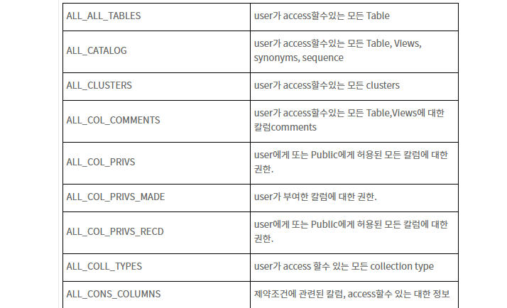
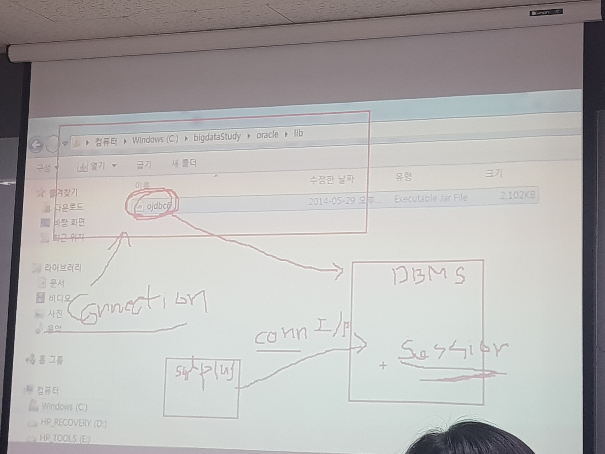

DQL (Query)
- Querry Language
- Select(데이터 검색)
DML (조작)
- *****Insert, Update, delete
- 데이터 자료와 관련되어 있음.
- Commit을 하지 않으면 복구할 수 있다.
DDL(정의어)
- Create Drop등
- TCL 중에 Commit이 내장되어 있다. Rename하더라도 기존의 작업이 Commit이 되버린다.
Commit
- 정상적으로 처리하겠다는 구문. 이거 안하면 저장안됨.
딕셔너리

DBA내에 있으면 DBA만 가능
User
- 권한을 주기 전에는 본인것만 가능.
- Resource.
부서 | |
사원 | |
부서에서 사원을 볼때 참조키, JOIN 등을 한다.
sqlplus bigdata/big
show user
ed create_Dept
- deptno number(3),
- dname varchar2(14),
- loc varchar2(12)
- );
*****제약조건 : 테이블 생성시 테이블 단위의 제약조건과 컬럼단위의 제약조건의 못옴.
단, not null은 Column단위의 제약조건만 허용
- select * from tab;
- select tname, tabtype from tab;
주석다는법 : --

select * from tab; 목록확인
테이블 구조 확인
desc dept

- DEPTNO = 정수
- DNAME =
기본 dept 테이블에 자료를 입력해보자.
Insert into (컬럼명, 컬럼명, ....) values(값, 값...) : not null은 생략될 수 없다.
- 문자열의 경우는 ' '
- 정수나 함수는 그냥 사용
Insert into values(컬럼의 순서대로 값을 입력)


rollback => 커밋이 되는 구간전까지 .
테이블삭제

- 휴지통에 남아있는 상태.
휴지통비우기

제약조건넣기
--create table dept(
--deptno number(3),
--dname varchar2(14),
--loc varchar2(12)
--);
--제약조건을 명시한 테이블 생성
create table dept(
deptno number(3) constraint dept_deptno_pk primary key, //컬람단위의 제약조건
dname varchar2(14),
loc varchar2(12),
constraint dept_deptno_pk primary key(deptno),//테이블단위의 제약조건
constraint dept_dname_uq unique(dname)
);
UNIQUE : 이 조건이 설정된 컬럼에는 중복된 값이 입력되지 못하도록 한다.
PRIMARY KEY : 이 조건은 NOT NULL + UNIQUE의 특징을 가지며, 테이블끼리의 유일성을 가지게 한다.
제약조건확인
2가지


유저의 권한 : 딕셔너리
-> 아무나 볼 수 업는 딕셔너리. 소유의 권한이 있다.
**dept no 는 notnull
유니크는 null을 허용한다.
중복은 허용하지 않는다.
primarykey는 null 중복 다 비허용
테스트 시연

친숙해지기
데이터삭제

**commit은 필수
데이터 중복

오늘할일
테이블제약조건
*JDBC연동 - insert문만구현
*연습문제) 사원 테이블
*JDBC 연동해서 INSERT문 구현
오전에 중요한거

부서번호
부서이름
부서지역
부서가 부모
게시판은 부모고 댓글이
참조한다는것은 자식이 부모를 참조하는거임
테이블간의 관계가있다
기본관계는 부모의 프라이머리키를 자식의 PK로 참조하지 않는거임.
- 비식별관계
테이블단위, 컬럼단위로 primary
낫넛은 테이블단위는 안됨.

사원테이블 만들기
- Char(고정)
- varChar2(가변길이)
Char는 10으로 설정하고 5만 넣어도 10임
varchar2는 20으로 설정하고 10만 넣으면 10임. 대신 20이 넘으면 오버플로우 발생
create table sawon(
sabun number(3),
saname varchar2(30),
deptno number(3),
sajob varchar2(20),
sapay number(10),
sahire date default sysdate,
sgender varchar2(5),
samgr number(3),
constraint sawon_sabun_pk primary key(sabun),
sawon에 sabun에 pk(이건 무슨제약인지 알기위해)

JDBC
JDBC사용 (절차 - 소스코드 참조)
- Ojdbc6.jar 라이브러리를 프로젝트에 포함
- 라이브러리 - 오른쪽 - (add jar)
// 1. JDBC 드라이버 연결 - 클래스로딩
Class.forName("oracle.jdbc.driver.OracleDriver");
// 2. Connection 획득 - 기능에 따라서 객체화시켜줌.
//여기에 newinstance()가 캡슐화가 되어있다.
String url = "jdbc:oracle:thin:@localhost:15221:xe";
String user = "bigdata";
String pwd = "big";
con = DriverManager.getConnection(url, user, pwd);
//3. PreparedStatement 값을 바인딩(?)한다.
String sql = "";
pstmt = con.prepareStatement(sql);
//PreparedStatement 객체를 사용해서 전송
System.out.println("출력" + con);
//Connectionoracle.jdbc.driver.T4CConnection@4629104a
//Statement 객체 이건 절 때 쓰 지 마
//보안이 취약하다. 변수일경우에 일일히 다 검사한다.
//그보다 좋은건 PreparedStatement이다.
//버퍼에 저장하고 검사하는거 안함.
JDBCInsertDeptDemo.java
static class.
**스태틱을 쓰는 이유 : 한곳에서 계속 다른곳에서도 쓰기 위함
**스태틱 초기화 하는 이유 : 쌓여있기때문.
/**
*
* 나누는 이유는 이 클래스 내에 책임을 주기 위함임.
*
*/
public class MyConn {
//스테틱초기화
//초기자원 : 메인메서드보다 선행. (기초에서 변경)
Connection conn;
static{
System.out.println("test");
try {
Class.forName("oracle.jdbc.driver.OracleDriver");
} catch (ClassNotFoundException ex) {
ex.printStackTrace();}
}
public static void main(String[] args) {
System.out.println("main");
}
public static Connection getConn() throws SQLException{
String url = "jdbc:oracle:thin:@localhost:1521:xe";
String user = "bigdata";
String pwd = "big";
return DriverManager.getConnection(url, user, pwd);
}
//test 다음 main이 수행!